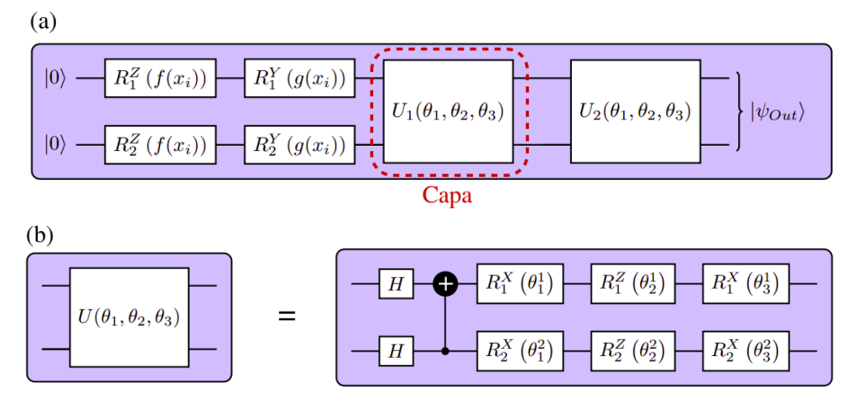
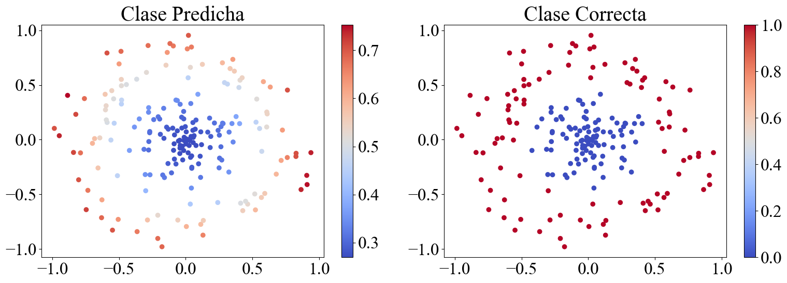
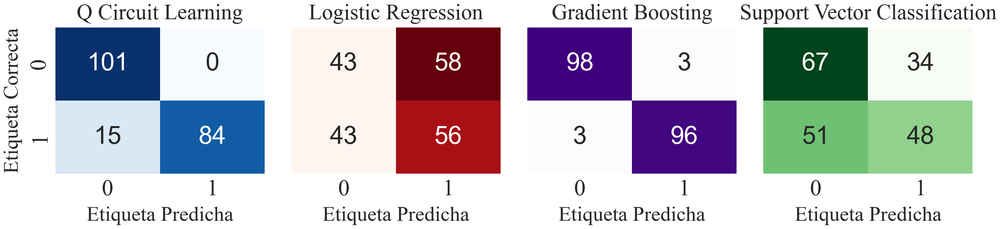
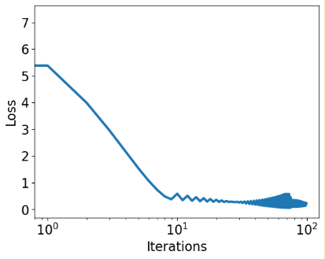

¿Cuánto rinde un circuito cuántico variacional con muy pocos recursos —pocos qubits, pocas capas— frente a los algoritmos clásicos que ya conocemos bien? Este trabajo explora el marco de Quantum Circuit Learning (QCL): un circuito cuántico parametrizado que se entrena de forma híbrida con optimización clásica, tratado como un modelo de aprendizaje automático más. Se lo comparó contra regresión logística, gradient boosting y SVC en un problema de clasificación: sin ningún ajuste especial del kernel u otros hiperparámetros, el circuito cuántico logra un desempeño comparable al de gradient boosting y muy superior al de regresión logística y SVC. Esa misma pregunta —qué tan bien rinde un circuito de estas características con recursos mínimos— llevó después a un terreno más difícil: probar estos circuitos en hardware cuántico real, donde el ruido deja de ser un detalle técnico y se vuelve el problema central. Esa línea sigue abierta.
¿Qué es Quantum Circuit Learning?
El Quantum Circuit Learning (Mitarai, Negoro, Kitagawa & Fujii, 2018) es un marco de trabajo híbrido para hacer machine learning con circuitos cuánticos de baja profundidad: combina un circuito cuántico parametrizado con optimización clásica de sus parámetros. El foco en circuitos de baja profundidad (pocas compuertas por qubit) responde a una razón práctica: son los que tienen chances reales de implementarse en el hardware cuántico actual, a diferencia de otros algoritmos cuánticos que requieren muchos más recursos.
- Cada dato de entrada se codifica en un estado cuántico aplicando compuertas de rotación sobre qubits que parten todos del mismo estado inicial (|0⟩)
- Luego se aplica una compuerta parametrizada (una o varias capas de rotaciones + entrelazamiento) cuyos ángulos θ son los parámetros a entrenar —análogos a los pesos de una red neuronal, donde los qubits harían las veces de neuronas
- Se miden valores de expectación (en la práctica, el promedio de repetir la medición del circuito muchas veces) y se optimizan los parámetros θ con un método clásico (en este trabajo, BFGS) para minimizar una función de costo, igual que se ajustan los pesos de una red neuronal

(a) Circuito para 2 qubits y 2 capas: las compuertas de rotación iniciales codifican el dato de entrada como estado cuántico, y la compuerta parametrizada (recuadro rojo) se repite una vez por cada capa del circuito. (b) Cada capa, en detalle: una compuerta de Hadamard y una compuerta de entrelazamiento (CNOT) sobre cada qubit, seguidas de tres rotaciones parametrizadas por los ángulos θ que se entrenan.
Clasificación: QCL vs. Clasificadores Clásicos
Presentado en la 2ª Jornada de Inteligencia Artificial de la UNC (2024), este trabajo replica uno de los experimentos del paper fundacional de QCL: un problema clásico de clasificación binaria, con datos generados artificialmente y no linealmente separables (100 muestras de entrenamiento, 100 de testeo). Se simuló un circuito de 6 qubits y profundidad 6 (108 parámetros en total, usando la librería qulacs) y se lo comparó contra tres clasificadores clásicos estándar de scikit-learn, sin adaptar el tipo de kernel ni otros hiperparámetros a los datos.
Las columnas de la tabla miden, cada una a su manera, qué tan bien distingue cada modelo las dos clases: ROC AUC evalúa esa capacidad de distinción a lo largo de todos los umbrales de decisión posibles, F1-score combina en un solo número la precisión y la exhaustividad del modelo, y accuracy es simplemente el porcentaje de aciertos. En los tres casos, 1.0 es el máximo (clasificación perfecta) y 0.5 equivale a tirar una moneda.
| Clasificador | ROC AUC | F1-score | Accuracy |
|---|---|---|---|
| Quantum Circuit Learning | 0.924 | 0.918 | 0.925 |
| Gradient Boosting | 0.970 | 0.970 | 0.970 |
| Support Vector Classification | 0.574 | 0.530 | 0.575 |
| Regresión Logística | 0.496 | 0.526 | 0.495 |
Tabla comparativa de métricas de clasificación. El circuito cuántico (fila resaltada) logra un desempeño comparable al de Gradient Boosting y muy superior al de SVC y regresión logística, ambos penalizados por la no linealidad de los datos.

Clase predicha por QCL (izquierda) vs. clase correcta (derecha) para las 100 muestras de testeo. El color codifica la probabilidad asignada a la clase 1; los puntos más difíciles de clasificar son los que quedan cerca del borde entre clases, donde esa probabilidad ronda 0.5.

Matrices de confusión de QCL y los tres clasificadores clásicos. Los errores de QCL corren en una sola dirección (15 falsos negativos, ningún falso positivo); regresión logística y SVC, penalizados por la no linealidad de los datos, se acercan al desempeño de una asignación al azar.
- El objetivo no fue mejorar el desempeño de los algoritmos clásicos optimizando su kernel o hiperparámetros, sino mostrar que el circuito cuántico, sin ningún ajuste especial y con pocos qubits y capas, logra un rendimiento similar
- Para este tipo particular de datos, una transformación no lineal (regresión logística) o un kernel polinomial (SVC) mejorarían esos resultados clásicos; un encoding distinto de los datos en el circuito cuántico podría, análogamente, mejorar los resultados de QCL
- La principal dificultad actual para llevar este tipo de algoritmos a hardware real es la sensibilidad al ruido de las computadoras cuánticas disponibles hoy
Ruido en Circuitos Cuánticos Reales: una Línea Abierta
Resultados en Hardware Real: ibm_brisbane
La clasificación había dejado una pregunta pendiente: ¿qué tan bien sobrevive un circuito de este tipo al ruido de un procesador cuántico real? Para explorarla, se llevó el mismo enfoque de circuitos de baja profundidad —esta vez sobre un problema de regresión, ajustando la función cos(πx)— a hardware real: ibm_brisbane, un procesador superconductor de qubits transmón, probado con distintos niveles de mitigación de errores (resilience 0, 1 y 2: desde ninguna mitigación hasta corrección de errores de lectura y de compuerta).
Los resultados confirman lo que ya se sospechaba: el error de ajuste crece con el número de qubits y empeora marcadamente cuando se reduce la mitigación de errores — incluso con la mitigación más agresiva disponible, el ruido del hardware real sigue siendo una limitación seria frente a la simulación ideal.
Modelando el Ruido: Tomografía de Procesos Cuánticos
Esto abrió la pregunta que orienta el trabajo actual: ¿se puede modelar teóricamente ese ruido? El enfoque en desarrollo usa tomografía de procesos cuánticos para reconstruir, a partir de las mediciones del circuito, los operadores de Kraus que describen el canal de ruido — comparando la señal simulada, la medida en hardware real y la reconstruida a partir del modelo aprendido. El paso siguiente, invertir ese proceso para poder corregirlo, exige la tomografía de estado completa del circuito, que requiere medir el conjunto completo de observables de Pauli: 4N de ellos, un número que crece muy rápido con el número de qubits (256 solo para 4 qubits) y que es, hoy, el cuello de botella del método.

Pérdida del ajuste durante el entrenamiento del modelo de tomografía de procesos: converge en pocas iteraciones, aunque con oscilación persistente — rastro del ruido estadístico de las mediciones sobre hardware real que todavía limita la reconstrucción.
Trabajo en desarrollo: por ahora hacen falta más mediciones para reducir el ruido estadístico de la reconstrucción, incorporar medidas de entrelazamiento, y entender cómo dependen los resultados de la arquitectura específica del circuito.
Este recorrido se presentó como charla en la Reunión Anual de Física Argentina (RAFA) 2024 bajo el título "Performance de circuitos cuánticos de baja profundidad para problemas de regresión", en coautoría con Nicolás Legnazzi, Federico Ribetto y Omar Osenda.
Charla
Charla sobre este trabajo, con más detalle sobre la implementación del circuito y los resultados obtenidos:
Para una introducción general a la computación cuántica, mirá esta otra charla: "Introducción a la Computación Cuántica" (CEIMAF, Mes de la Ciencia 2024).
Tecnologías
Estado del Trabajo
El trabajo de clasificación fue presentado en la 2ª Jornada de Inteligencia Artificial de la UNC (2024) y quedó cerrado con esos resultados. La charla en RAFA 2024 documentó los primeros resultados sobre hardware real y abrió la línea de modelado de ruido que sigue en desarrollo. Ambos forman parte del proyecto SECyT-UNC "Aplicación de técnicas de aprendizaje automático en física cuántica y sistemas complejos".
Referencias
[1] K. Mitarai, M. Negoro, M. Kitagawa y K. Fujii, "Quantum Circuit Learning", Physical Review A 98, 032309 (2018). DOI: 10.1103/PhysRevA.98.032309
[2] S. Perón Santana, N. Legnazzi y O. Osenda, "Eficiencia comparativa entre algoritmos clásicos y cuánticos en un problema de clasificación", 2ª Jornada de Inteligencia Artificial, UNC (2024).
[3] S. Perón Santana, N. Legnazzi, F. Ribetto y O. Osenda, "Performance de circuitos cuánticos de baja profundidad para problemas de regresión", charla, Reunión Anual de Física Argentina, RAFA (2024).